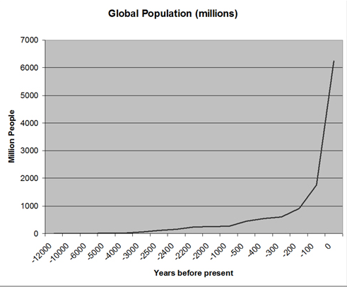

The Industrial Revolution

Seagrave, Wyken. Industrial Revolution, 14 Nov. 2019, www.historyoftheuniverse.com/index.php?p=indurevo.htm.
The population of humans on the Earth began to increase exponentially at the time of the Industrial Revolution. There were many reasons for this. The Industrial Revolution is known as a time of great change. The world began to move toward what we now recognize as modern society, where technology is a major part of our lives. Not only did technology increase. Medicine began to improve and life expectancy began to rise. The population also increased when people became dependent on their children to work. Having more children meant you had more people in your family to earn income. Children were born even quicker than they were dying.
The Editors of Encyclopaedia Britannica. Industrial Revolution.
Encyclopædia Britannica, Encyclopædia Britannica, Inc., 4 Sept. 2019, www.britannica.com/event/Industrial-Revolution.